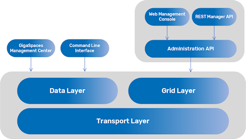
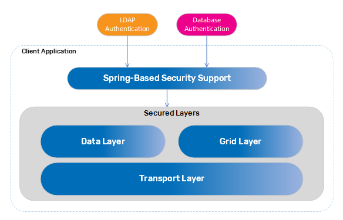

This section provides an understanding of GigaSpaces Security features, where they fit in the GigaSpaces architecture, which components can be secured, and how to configure and customize the security depending on your application security requirements.
Some security features are part of the open source edition, while others are only available with the commercial (licensed) editions.
Data access privileges
Operation privileges
Monitoring privileges
System administration privileges
You can also configure auditing for operations on the data grid, and secure the SSL transport layer.
The open source editions do not include a security implementation. A reference implementation is provided instead.
The commercial editions of
GigaSpaces Management Center
Command Line Interface
Web Management Console
Rest Manager API
The administration and monitoring tools interact with the application layers as follows.

Refer to Administration Tools for details about the configuration options.
The data layer - You can declare a secured Space or Processing Unit.
The grid layer - You can declare the data grid as secured. Includes the grid components (GSA, GSM, GSC,
The transport layer - Provides a generic network filter with SSL support.
Security is configured via a property file that includes required and custom properties. For more information, refer to the following parts of the Security section in this Administration guide:
Space and Processing Unit - Includes configuration options for the properties file.
Grid components - Includes configuration options for the grid components.
Web Management Console - Includes configurations for authenticating with secure data grid components.
REST Manager API - Includes security and SSL configurations for secured RESTful API support.
When no property file is configured, there is a fallback implementation mainly used for testing or to get you started. This implementation stores the user credentials in a local file and can be used to demonstrate that security has been applied.
Refer to the following sections for more information about the
To read more about the
To write your own implementation, refer to Reference Implementation, which uses MongoDB.
For other custom security implementations, refer to Custom Security. One such custom security implementation is the Spring Security Bridge.
In order to use the security implementation, include the
<dependency>
<groupId>com.gigaspaces</groupId>
<artifactId>xap-security</artifactId>
<version>[%=Versions.maven-version-MX%]</version>
</dependency>
For more information on dependencies, refer to Maven Artifacts.
The Hello World example provides a step-by-step guide to deploying a Processing Unit with a secured Space, accessing it from a remote proxy, and declaring principals using the administration tools.
Spring Security is one of the most mature and widely used Spring projects. GigaSpaces provides a Spring-based security bridge to enable an extensible implementation to LDAP (Lightweight Directory Access Protocol) or database authentication.
For more information, refer to Spring Security Bridge.
